Werken met de kaart
In tegenstelling tot de gewone papieren kaart toont de Kaartviewer een zogenaamde interactieve dynamische kaart. Interactief betekent hier dat u zelf bepaalt welk gedeelte van de kaart u bekijkt en ook of dat een groot of juist klein gebied is. Met dynamisch wordt bedoeld dat het kaartbeeld zich daarbij aanpast en dus niet altijd hetzelfde weergeeft. Vooral dit laatste is belangrijk bij het gebruik van de kaart. Zie daarom ook bij Kaartschaal.
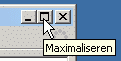NB Het gebruik van de Kaartviewer gaat het best, als het venster waarin de Kaartviewer getoond wordt zo groot mogelijk is. Klik eventueel op de middelste knop rechts bovenaan het venster om het venster te maximaliseren:
Knoppen en dergelijke
De bediening van de Kaartviewer gaat door middel van een aantal knoppen en andere bedieningselementen. Hieronder worden de knoppenbalk, de schuifregelaar en de overzichtskaart uitgelegd.De knoppenbalk
De knoppenbalk bestaat uit twee groepen van knoppen.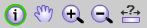 De eerste groep bestaat uit vijf knoppen die eerst met een muisklik moeten worden geactiveerd. Daarna wordt bij elke klik in de kaart de actie of gebeurtenis die hoort bij de geactiveerde knop. De knop en bijbehorende actie blijft actief totdat u een andere kiest. De knop die actief is heeft een groene omranding zoals bij de informatie opvragen knop in de afbeelding links.
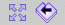 De tweede groep wordt gevormd door twee knoppen waarbij na een klik op de knop direct een actie volgt.
Knoppen in de eerste groep:
|
|
informatie opvragen: een klik in de kaart betekent informatie opvragen van de plek waar geklikt is. Zie ook bij Informatie opvragen. | |
| 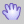 | kaart verslepen: hiermee kunt u het kaartbeeld verslepen door de linker muisknop ingedrukt te houden terwijl u de muis verschuift. Het kaartbeeld schuift dan mee. | |
| 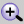 | inzoomen: na een klik in de kaart zoomt de kaart in op die plek. Door een rechthoek te trekken (via slepen met de muis), heeft u meer controle over hoe ver de kaart inzoomt. | |
| uitzoomen: deze functie werkt soortgelijk als inzoomen. | ||
| 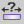 | afstand meten: door de muis te slepen vanaf een plek in de kaart kunt u een afstand meten. |
Knoppen in de tweede groep:
| 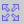 | volledig kaartbeeld: na een klik op deze knop wordt direct uitgezoomd naar de volledige uitsnede en wordt dus de gehele kaart getoond. | |
| 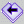 | stap terug: door middel van deze knop kunt u terug naar de vorige uitsnede. |
Extra verschuif mogelijkheid
In de rand van het kaartvenster zijn vier knoppen verwerkt waarmee de kaart naar links en rechts en naar boven en beneden kan worden verschoven: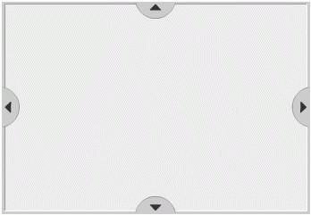
De schuifregelaar
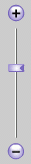De schuifregelaar geeft aan hoe ver ingezoomd is. Wanneer de schuif helemaal onderaan staat is de kaart volledig uitgezoomd. De kaart wordt dan in zijn geheel getoond. Dit komt overeen met het resultaat van een klik op de knop volledig kaartbeeld.Als de schuif helemaal bovenaan staat, dan is de kaart maximaal ingezoomd.
Met de schuifregelaar is het ook mogelijk om in en uit te zoomen. Dit kan door te klikken op de ronde + of de ronde - of door de schuif te verslepen.
De overzichtskaart
In de overzichtskaart wordt door middel van een rechthoek het gebied aangegeven wat in het kaartvenster getoond wordt. Deze rechthoek kan aan zijn rechteronderhoek worden versleept. Zodra de rechthoek wordt losgelaten zal het kaartvenster verschuiven naar het door de rechthoek begrensde gebied.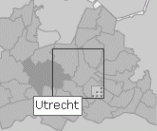
De overzichtskaart kan nog een tweede functie hebben, namelijk het kiezen van een bepaald gebied. Als er in de overzichtskaart vlakjes oplichten wanneer de muis er overheen gaat dan is deze functie actief. Een klik op de overzichtskaart zal in dat geval er voor zorgen dat het kaartvenster zodanig verschuift dat het gehele gebied wat in de overzichtskaart oplichtte getoond wordt. Meestal zullen deze vlakjes de verschillende gemeenten zijn.